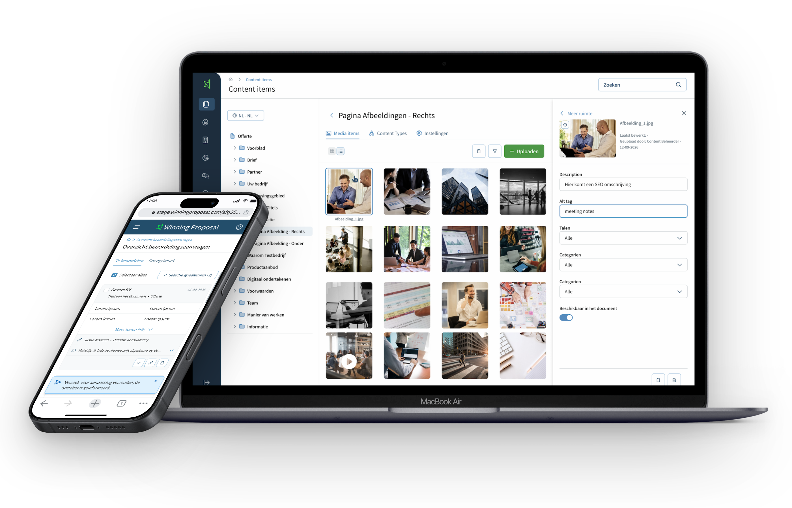

Winning Proposal B2B SaaSLead UX Designersinds medio 2024
Elke nieuwe stap van een offerteplatform, van onderzoek tot livegang
Winning Proposal is offertesoftware waarmee salesteams uit een gedeelde bibliotheek snel een consistent, winnend voorstel maken. Sinds medio 2024 ben ik er de vaste lead designer.
- RolLead UX Designer
- SindsMedio 2024, doorlopend
- Team2 product owners, 12 developers, 2 UX designers
- StatusElke feature live

De opdracht
Geen afgebakend project, maar een doorlopende samenwerking: Winning Proposal haalde mij aan boord nadat ze de Ambiance-case hadden gezien. Sindsdien werk ik feature voor feature aan het platform, telkens samen met een product owner en het developmentteam, en stem ik af met het implementatieteam dat klanten live brengt.
Het terugkerende probleem
Elke feature had een eigen vraag, maar eronder zat steeds hetzelfde: salesteams willen een offerte sneller de deur uit, terwijl content en media op twee plekken stonden en het zoeken en herschrijven van bestaande teksten meer tijd kostte dan het schrijven zelf. De opgave was telkens: minder handwerk, meer zekerheid dat de juiste content in het voorstel belandt.
Wat ik deed
Iedere feature doorliep dezelfde cyclus: interviews met contentbeheerders, sales en stakeholders (ruim vijftien inmiddels), benchmarkonderzoek, prototype, validatie en livegang. Zo vernieuwde ik de contentbibliotheek en voegde die samen met de mediabibliotheek, ontwierp ik goedkeurings- en vervolgdocumentflows en een commercieel en persoonlijk dashboard voor inzicht en statistieken.
Het meest trots ben ik op contentcreatie met AI: gebruikers uploaden bijvoorbeeld een brochure, waarna AI daar herbruikbare offertecontent uit haalt. Omdat content in Winning Proposal diep genest is, van brief tot tekstblok en kop, ontwierp ik op basis van benchmarkonderzoek een principe van uitvouwbare, geneste content, zodat gebruikers laag voor laag beoordelen wat de AI voorstelt.
Het resultaat
Alles wat tot nu toe is ontworpen, staat live. Op cijfers wordt bij Winning Proposal niet gestuurd; het resultaat zit in werkende features die dubbel beheer en zoekwerk weghalen, en in de samenwerking zelf: na twee jaar ben ik nog steeds de vaste ontwerper voor elke nieuwe stap van het platform.
Wat dit laat zien
Senior werken in een bestaand product: doorlopend eigenaarschap in plaats van losse opdrachten, AI van benchmark naar werkende feature brengen, en iteratie als standaard, in nauwe samenwerking met twee product owners en twaalf developers.